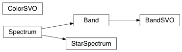

API¶
armapy.mag_calc Module¶
Created on Thu Nov 2 06:52:28 2017
@author: Patrick Rauer
Functions¶
get_vega_data(file) |
Load Vega spectrum |
Classes¶
Band([band, wavelength, response, smt]) |
Band passes photometric response curves |
BandSVO(telescope, instrument, filt[, smt]) |
|
ColorSVO(telescope, instrument, band1, band2) |
Class to calculate the photometric color of a spectra. |
Spectrum() |
General spectrum class |
StarSpectrum([file, wavelength, flux]) |
StarSpectrum contains the wavelength and the flux of a source. |
Table([data, masked, names, dtype, meta, …]) |
A class to represent tables of heterogeneous data. |
Class Inheritance Diagram¶
armapy.svo Module¶
Created on Wed Nov 1 11:00:33 2017
Script to download the list of available filter-curves from the SVO (http://svo2.cab.inta-csic.es/svo/theory/fps3/index.php?&mode=browse) website and to download the filter-curves itself.
@author: Patrick Rauer
Functions¶
download_filter_curve(telescope, instrument, …) |
Downloads a filter transmission curve from the SVO web page. |
get_filter_curve(telescope, instrument, band) |
Returns the specific filter curve back. |
get_filter_information(telescope, …) |
Collects the additional filter information from a SVO filter web-page |
get_svo_filter_list([path, update]) |
Creates a complete list of all filter-curves, which are available on the SVO web page. |
save_list(surveys[, path, update]) |
Saves the list of the available SVO filters |
vstack(tables[, join_type, metadata_conflicts]) |
Stack tables vertically (along rows) |